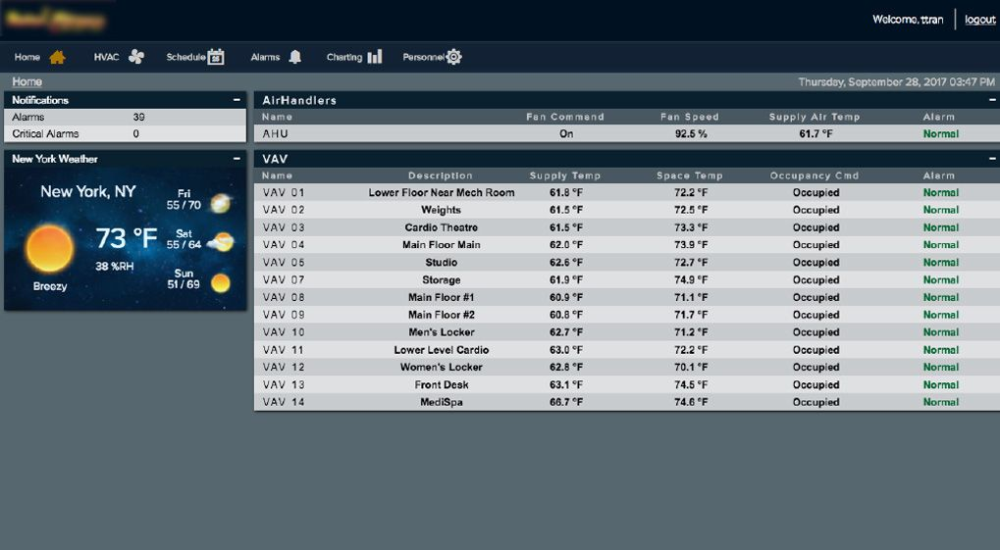
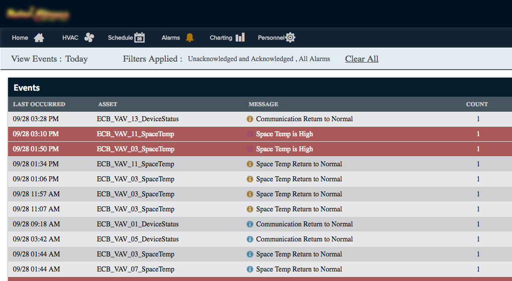
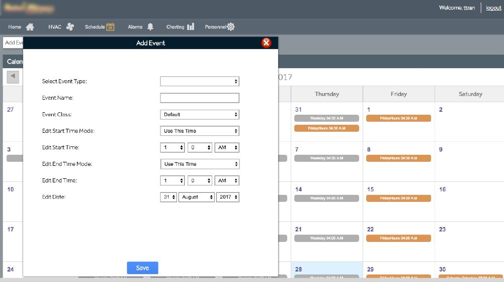
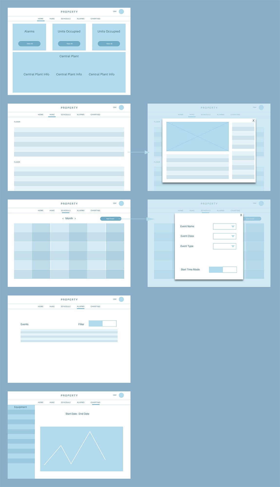
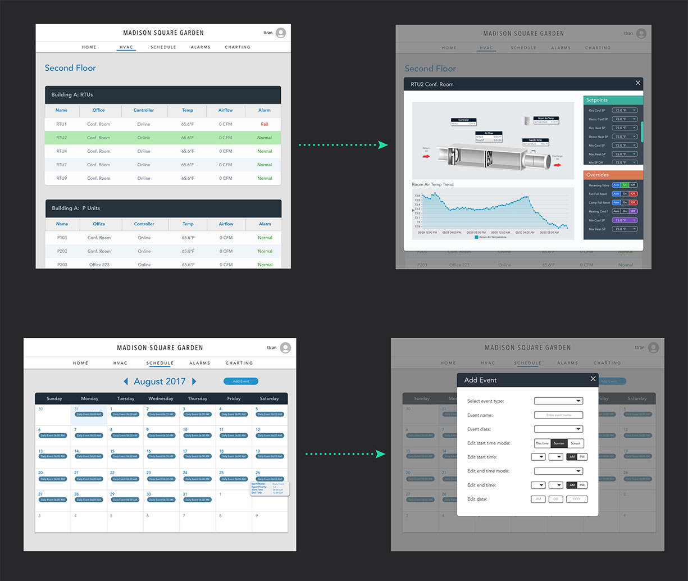

Project Overview
Controlco specializes in integrating a centralized building management system for commercial highrises, data centers, and other facilities. Devices known as JACEs are installed onsite to communicate data into our system. My role at Controlco was to take this heavy IoT data and put it in a palatable interface for our clients. This process is complicated and fragile, but is a powerful way to help our clients visualize and control the innerworkings of their commercial properties.
One of our clients is a provider of shared workspaces for small businesses and large enterprises. They contracted us to centralize several of their buildings' controls including HVAC, lighting, and other systems. While we already had an interface in place for them, I was charged with the task to come up with a new design for the product to improve usability.
Out With the Old
Before my onboarding with Controlco, there weren't any other designers. There were no established processes, no workflow, and no design-first attitudes. Many of the designs were cranked out by the CEO and engineers themselves. It wasn't surprising that the web applications weren't user friendly nor appealing, so I knew there was going to be a lot of work cut out for me. Here are some screenshots of the interface before I headed up the new design initiatives.
A screenshot of the homepage, pre-makeover. For some reason, the HVAC and homepage are identical and no one questioned why.
The old alarm console which shows all notification events. The font being used here is different than what's on the rest of the website.
Users can add specific schedules by going to this page. However, the design of this entire page is flawed and doesn't adhere to best practices in dropdown and modal trends.
As I do with other redesigns, I went through the current website and noted things I can improve on. I made sure that my solutions would align with our goals during the entire process.
- The HVAC page was the exact same thing as the homepage.
- Because we didn't have a brand guideline, there was no consistency in font and color.
- There were a few counterintuitive interactions like the dropdowns that contained only 2 selections.
- No flow or information hierarchy was present– there's just data everywhere.
The Process
Working in the building automation space comes with some obstacles. Our clients are technicians and field engineers who've worked in the industry for decades. They love their data, numbers and large font, and were not very open to new designs. In order for Controlco to thrive and gain more contracts, we needed to update our products and make sure they look just as good as they perform.
The layout for the in-browser apps are almost the same for all customers. Each website has a global navigation bar with links for a homepage, HVAC, lighting, alarms, and personnel. However, the designs of these apps vary between customers. The VP of Operations specifically wanted a UI that was "clean" and different from our previous dark blue themes.
A wireframe mockup of the flow and modal interactions.
Once a user logs in, they will land on the homepage which is a quick visual summary of each of system: HVAC, lighting, and alarms. Certain notifications will appear here, such as equipment out of their setpoint parameters or lighting panels that aren't working. While the homepage varies for each client, some contain extra information such as local weather and time.
My team and I were constantly communicating with our customers throughout the entire process, usually through Ringcentral meetings and email. It was a highly iterative process, building up the UI and changing it up whenever our clients had new developments. Once everyone agreed with the barebones structure and flow, I began working on the aesthetic.

A mini style guide I made for this product.
A mini style guide I made for this product.
On the bright side, it's always a fun and challenging process to come up with a design for a company that doesn't have a brand guideline. This project gave me a lot of creative freedom, but I still had to make ends meet with the limited space and type of data I could experiment with.
A few screenshots of the improvementes I made. For the Add Event form, I removed the dropdown menus and incorporated toggles instead for items with only three or less options.
After presenting the design to the UI team, programming team, and clients, I received positive feedback. People warmly welcomed the new look and the simplicity of the flow. Everyone claimed that it was easy to follow and was a big step up from what they were using. Through InVision and Zeplin, I was able to communicate the exact design to engineers.

The final design. While I had the freedom to choose the color palette for this product, I adhered to certain color conventions for our equipment statuses.
A New Look for Controlco Products
This project represented a milestone for my Controlco career because I was given the opportunity to introduce a design process as well as industry-standard tools to the company. It was a push in the right direction, initiating a new mentality for the team to focus on design just as much as functionality. Because of this project, I was the go-to person whenever the VP of operations needed new concepts and designs.